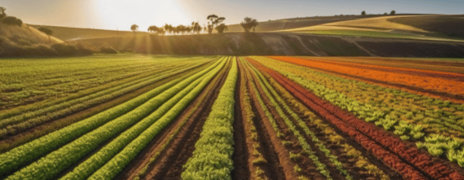
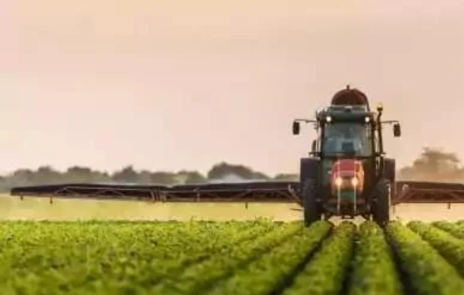

O Que é Agricultura
Segundo o Dicionário Aurélio, agricultura é o cultivo do solo, por meio de procedimentos,
métodos
e técnicas próprias, que buscam produzir alimentos para o consumo humano, como legumes, cereais, frutas e
verduras, ou para serem usados como matérias-primas na indústria.


Por que a Agricultura é importante?
A agricultura é uma atividade de grande importância alimentícia, estratégica e econômica. A
produção de alimentos é de suma importância, tanto para o suprimento das sociedades quanto para o fornecimento
de matérias-primas.
Sistema Agrículo
Agricultura Expansivo
É um sistema agrícola caracterizado pelo uso de técnicas rudimentares ou tradicionais na
produção. Esse tipo de agricultura pode ser encontrado tanto nas pequenas quanto nas grandes propriedades com o
predomínio da mão de obra humana e baixa mecanização.
Caracteristicas
O uso de tecnologia é reduzido ou inexistente. Por ser uma modalidade de produção que dispõe de
poucos recursos para investimento, as caras técnicas de produção agrícola geralmente não são utilizadas; A
preparação do solo é feita de maneira rudimentar.

Vantagens
suas principais vantagens são na baixa dependência de insumos, o que reduz drasticamente os
impactos no meio ambiente, bem como a preservação de ecossistemas e o estímulo a práticas como rotação de
culturas.
Desvantagens
esse tipo de sistema agrícola não conta com muito capital investido. Não há emprego de
tecnologias avançadas, portanto, a mão de obra é rudimentar e pouco qualificada. Como não há muita exploração das
terras, a produtividade é baixa. Não é comum o uso de adubos e fertilizantes.

Agricultura intensiva
É um agrossistema que visa, essencialmente, ao aumento da produtividade e à redução do tempo de
produção. Para atingir esse objetivo, quem pratica essa modalidade de produção agrícola faz uso intensivo de
insumos, máquinas, implementos e tecnologia aplicada ao cultivo.
Caracteristicas
Aumento do uso de fertilizantes e inseticidas, irrigação abundante, tratamento de terras com máquinas pesadas
, plantio de espécies de alto rendimento, ampliação de áreas cultivadas, entre outros.

Vantagens
Alimentos com preços mais acessíveis para a maioria da população; Mais lucros para os gestores agrícolas de
uma dada produção agrícola; Melhor aproveitamento das terras, de forma a rentabilizar todo o espaço; Controlo
de pragas mais fácil e rápido.
Desvantagens
As práticas de agricultura intensiva são os principais promovedores da mudança climática global, acelerando
a erosão do solo e a poluição geral do meio ambiente, devido ao impróprio sequestro de carbono, emissões de
combustível fóssil e abordagem exploradora do uso da terra e da água. Impacto na saúde humana.
EVOLUÇÃO DA AGRICULTURA
" agricultura surgiu no mundo há aproximadamente 12.000 anos, durante o período histórico conhecido como
Neolítico. O início desse período foi marcado pela Revolução Agrícola, que determinou a maior compreensão
pelos seres humanos dos processos de preparo e cultivo dos solos, a domesticação das plantas e a sua correlação
com os diferentes fenômenos da natureza. O maior domínio da natureza proporcionou, ainda, o abandono gradativo
do nomadismo e a adoção do sedentarismo, processo esse que foi fundamental na organização do espaço mundial.